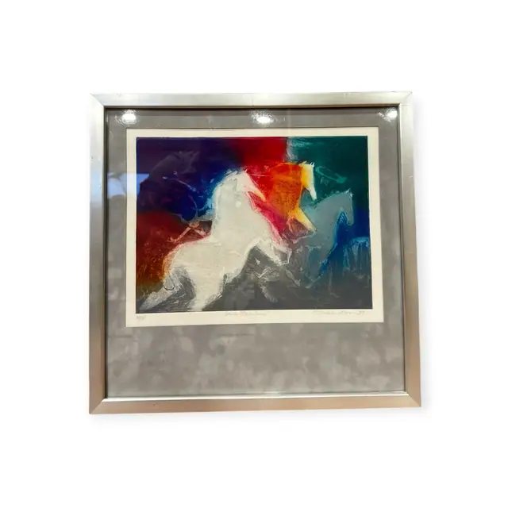
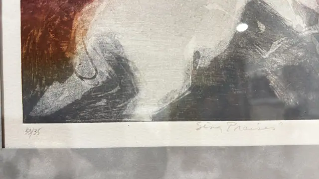
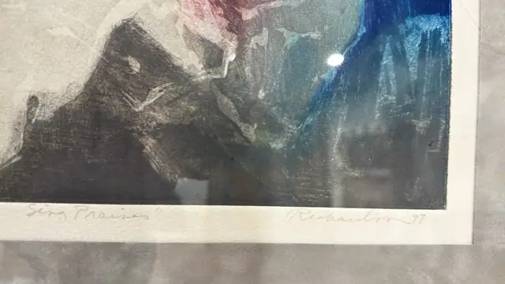

Paintings & Prints
'Sing Praises' Signed Print of Rearing Horses, Richardson, Numbered Edition, Framed, 1997
Richardson · 1997
Price Upon Request



About the Item
Richardson. A limited-edition print in which two ghostly white horses rear out of a smoky black and charcoal ground. The animals are drawn with rapid scratched white lines, while the surrounding field is worked in grainy aquatint-like tone. Bursts of rust red at the left and cobalt and turquoise at the right frame the composition, and the image sits on a wide untouched paper margin carrying the pencil title, number and signature. Medium: colour etching / aquatint on paper. Signed lower right margin, in pencil, reading "Richardson '97". Edition: 33/35. Inscribed on the reverse or mount: 33/35; "Sing Praises"; Richardson '97. Condition: Heavy reflections and glare on the glazing in every shot; no tears, foxing or staining visible through the glass.
Details
- Creator:
- Richardson
- Creation Year:
- 1997
- Dimensions:
- Height: 16.0 in (40.64 cm)
Width: 16.75 in (42.55 cm)
outside of frame - Medium:
- colour etching / aquatint on paper
- Edition:
- 33/35
- Period:
- 20Th
- Condition:
- Offered in the condition shown in the photographs.
- Reference Number:
- VO-185
- Documentation:
- no certificate seen
- Gallery Location:
- 33/35; "Sing Praises"; Richardson '97